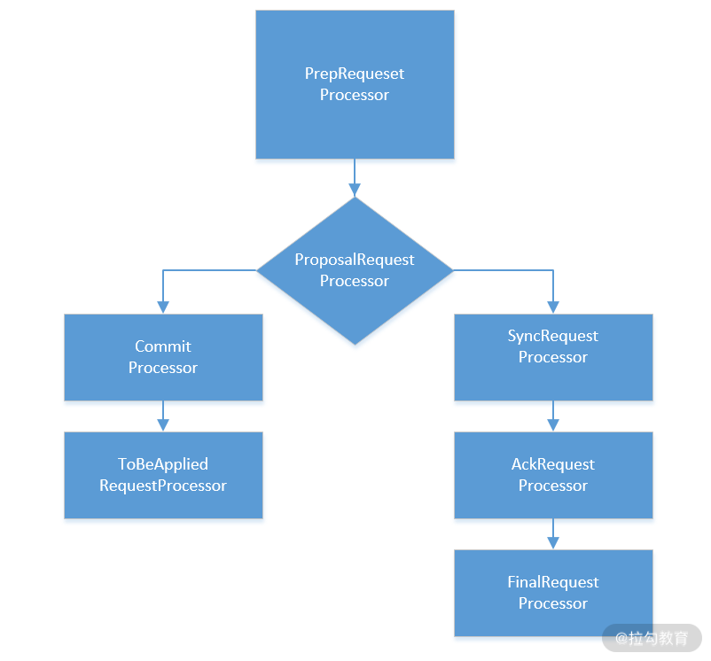
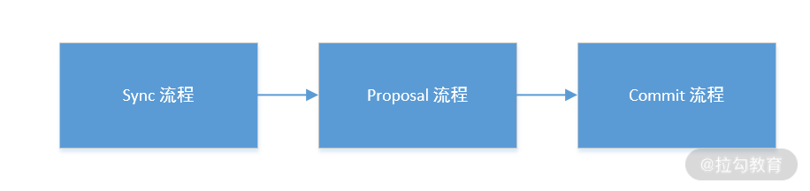

- 00 开篇词：选择 ZooKeeper，一步到位掌握分布式开发.md.html
- 01 ZooKeeper 数据模型：节点的特性与应用.md.html
- 02 发布订阅模式：如何使用 Watch 机制实现分布式通知.md.html
- 03 ACL 权限控制：如何避免未经授权的访问？.md.html
- 04 ZooKeeper 如何进行序列化？.md.html
- 05 深入分析 Jute 的底层实现原理.md.html
- 06 ZooKeeper 的网络通信协议详解.md.html
- 07 单机模式：服务器如何从初始化到对外提供服务？.md.html
- 08 集群模式：服务器如何从初始化到对外提供服务？.md.html
- 09 创建会话：避开日常开发的那些“坑”.md.html
- 10 ClientCnxn：客户端核心工作类工作原理解析.md.html
- 11 分桶策略：如何实现高效的会话管理？.md.html
- 12 服务端是如何处理一次会话请求的？.md.html
- 13 Curator：如何降低 ZooKeeper 使用的复杂性？.md.html
- 14 Leader 选举：如何保证分布式数据的一致性？.md.html
- 15 ZooKeeper 究竟是怎么选中 Leader 的？.md.html
- 16 ZooKeeper 集群中 Leader 与 Follower 的数据同步策略.md.html
- 17 集群中 Leader 的作用：事务的请求处理与调度分析.md.html
- 18 集群中 Follow 的作用：非事务请求的处理与 Leader 的选举分析.md.html
- 19 Observer 的作用与 Follow 有哪些不同？.md.html
- 20 一个运行中的 ZooKeeper 服务会产生哪些数据和文件？.md.html
- 21 ZooKeeper 分布式锁：实现和原理解析.md.html
- 22 基于 ZooKeeper 命名服务的应用：分布式 ID 生成器.md.html
- 23 使用 ZooKeeper 实现负载均衡服务器功能.md.html
- 24 ZooKeeper 在 Kafka 和 Dubbo 中的工业级实现案例分析.md.html
- 25 如何搭建一个高可用的 ZooKeeper 生产环境？.md.html
- 26 JConsole 与四字母命令：如何监控服务器上 ZooKeeper 的运行状态？.md.html
- 27 crontab 与 PurgeTxnLog：线上系统日志清理的最佳时间和方式.md.html
- 28 彻底掌握二阶段提交三阶段提交算法原理.md.html
- 29 ZAB 协议算法：崩溃恢复和消息广播.md.html
- 30 ZAB 与 Paxos 算法的联系与区别.md.html
- 31 ZooKeeper 中二阶段提交算法的实现分析.md.html
- 32 ZooKeeper 数据存储底层实现解析.md.html
- 33 结束语 分布技术发展与 ZooKeeper 应用前景.md.html
- 捐赠
12 服务端是如何处理一次会话请求的？
在进阶篇中，我们主要学习的内容是 ZooKeeper 客户端与服务器端的通信机制，以及会话的底层实现原理。而本课时是 ZooKeeper 会话相关知识点的最后一节课，我们将重点讲解 ZooKeeper 服务端在收到一次会话请求时其内部的处理过程。
服务端处理过程
在之前的课程中，我们提过会话的创建过程，当客户端需要和 ZooKeeper 服务端进行相互协调通信时，首先要建立该客户端与服务端的连接会话，在会话成功创建后，ZooKeeper 服务端就可以接收来自客户端的请求操作了。
ZooKeeper 服务端在处理一次客户端发起的会话请求时，所采用的处理过程很像是一条工厂中的流水生产线。比如在一个毛绒玩具加工厂中，一条生产线上的工人可能只负责给玩具上色这一个具体的工作。

ZooKeeper 处理会话请求的方式也像是一条流水线，在这条流水线上，主要参与工作的是三个“工人”，分别是 PrepRequestProcessor 、ProposalRequestProcessor 以及 FinalRequestProcessor。这三个“工人”会协同工作，最终完成一次会话的处理工作，而它的实现方式就是我们之前提到的责任链模式。
下面我将分别对这三个部分进行讲解：作为第一个处理会话请求的“工人”，PrepRequestProcessor 类主要负责请求处理的准备工作，比如判断请求是否是事务性相关的请求操作。在 PrepRequestProcessor 完成工作后，ProposalRequestProcessor 类承接接下来的工作，对会话请求是否执行询问 ZooKeeper 服务中的所有服务器之后，执行相关的会话请求操作，变更 ZooKeeper 数据库数据。最后所有请求就会走到 FinalRequestProcessor 类中完成踢出重复会话的操作。
底层实现
通过上面的介绍，我们对 ZooKeeper 服务端在处理一次会话请求的方法过程会有比较具体的了解。接下来我们再从底层实现的角度分析一下在代码层面的实现中，ZooKeeper 有哪些值得我们注意和学习的地方。
请求预处理器
在 ZooKeeper 服务端，第一个负责处理请求会话的类是 PrepRequestProcessor。它是 ZooKeeper 责任链处理模式上的第一个处理器。PrepRequestProcessor 实现了 RequestProcessor 接口，并继承了线程类 Thread，说明其可以通过多线程的方式调用。在 PrepRequestProcessor 类内部有一个 RequestProcessor 类型的 nextProcessor 属性字段，从名称上就可以看出该属性字段的作用是指向下一个处理器。
public class PrepRequestProcessor extends Thread implements RequestProcessor {
RequestProcessor nextProcessor;
}
PrepRequestProcessor 类的主要作用是分辨要处理的请求是否是事务性请求，比如创建节点、更新数据、删除节点、创建会话等，这些请求操作都是事务性请求，在执行成功后会对服务器上的数据造成影响。当 PrepRequestProcessor 类收到请求后，如果判断出该条请求操作是事务性请求，就会针对该条请求创建请求事务头、事务体、会话检查、ACL 检查和版本检查等一系列的预处理工作。如下面的代码所示，上述所有操作的逻辑都是在 PrepRequestProcessor 类中的 pRequest 函数实现的。
protected void pRequest(Request request) throws RequestProcessorException {
switch (request.type) {
case OpCode.create:
CreateRequest createRequest = new CreateRequest();
pRequest2Txn(request.type, zks.getNextZxid(), request,createRequest, true);
break;
case OpCode.delete:
}
}
在 pRequest 函数的内部，首先根据 OpCode.create 等字段值来判断请求操作的类型是否是事务操作，如果是事务操作，就调用 pRequest2Txn 函数进行预处理，这之后将该条请求交给 nextProcessor 字段指向的处理器进行处理。
事物处理器
PrepRequestProcessor 预处理器执行完工作后，就轮到 ProposalRequestProcessor 事物处理器上场了，ProposalRequestProcessor 是继 PrepRequestProcessor 后，责任链模式上的第二个处理器。其主要作用就是对事务性的请求操作进行处理，而从 ProposalRequestProcessor 处理器的名字中就能大概猜出，其具体的工作就是“提议”。所谓的“提议”是说，当处理一个事务性请求的时候，ZooKeeper 首先会在服务端发起一次投票流程，该投票的主要作用就是通知 ZooKeeper 服务端的各个机器进行事务性的操作了，避免因为某个机器出现问题而造成事物不一致等问题。在 ProposalRequestProcessor 处理器阶段，其内部又分成了三个子流程，分别是：Sync 流程、Proposal 流程、Commit 流程，下面我将分别对这几个流程进行讲解。

Sync 流程
首先我们看一下 Sync 流程，该流程的底层实现类是 SyncRequestProcess 类。SyncRequestProces 类的作用就是在处理事务性请求时，ZooKeeper 服务中的每台机器都将该条请求的操作日志记录下来，完成这个操作后，每一台机器都会向 ZooKeeper 服务中的 Leader 机器发送事物日志记录完成的通知。
Proposal 流程
在处理事务性请求的过程中，ZooKeeper 需要取得在集群中过半数机器的投票，只有在这种情况下才能真正地将数据改变。而 Proposal 流程的主要工作就是投票和统计投票结果。投票的方式大体上遵循多数原则，更详细的内容在之后的课程中会展开讲解。
Commit 流程
请你注意，在完成 Proposal 流程后，ZooKeeper 服务器上的数据不会进行任何改变，成功通过 Proposal 流程只是说明 ZooKeeper 服务可以执行事务性的请求操作了，而要真正执行具体数据变更，需要在 Commit 流程中实现，这种实现方式很像是 MySQL 等数据库的操作方式。在 Commit 流程中，它的主要作用就是完成请求的执行。其底层实现是通过 CommitProcessor 实现的。如下面的代码所示，CommitProcessor 类的内部有一个 LinkedList 类型的 queuedRequests 队列，queuedRequests 队列的作用是，当 CommitProcessor 收到请求后，并不会立刻对该条请求进行处理，而是将其放在 queuedRequests 队列中。
class CommitProcessor {
LinkedList queuedRequests
}
之后再调用 commit 方法取出 queuedRequests 队列中等待的请求进行处理，如下面的代码所示：
synchronized public void commit(Request request) {
committedRequests.add(request);
notifyAll();
}
到目前为止，我们就对 ProposalRequestProcessor 处理器的三个流程做了一个大体介绍，更详细的分析我们会在之后的课程进行讲解。
最终处理器
在经过了上面一系列的处理过程后，请求最终会到达责任链上的最后一个处理器：FinalRequestProcessor。该处理器的作用是检查请求的有效性。而所谓的有效性就是指当前 ZooKeeper 服务所处理的请求是否已经处理过了，如果处理过了，FinalRequestProcessor 处理器就会将该条请求删除；如果不这样操作，就会重复处理会话请求，这样就造成不必要的资源浪费。
结束
通过本课时的学习，我们掌握了 ZooKeeper 服务端在收到一次会话请求的内部处理过程。并进一步掌握了 ZooKeeper 处理会话请求时所采用的的责任链设计模式的实现原理。而在服务端处理会话请求时，涉及三个类分别是预处理器 PrepRequestProcessor、事物处理器 ProposalRequestProcessor，以及 final 最终处理器 FinalRequestProcessor。
本课时也是会话相关知识的最后一课，经过了前面几课时的学习。我们应该知道什么是会话、会话都有哪几种状态以及会话在服务端的处理过程是怎么实现的。掌握这些知识对我们接下来的学习至关重要，如果对我刚才提到的知识点还有疑问，建议你复习一下前面的内容，做到真正掌握会话的相关知识点。
© 2019 - 2023 Liangliang Lee. Powered by gin and hexo-theme-book.